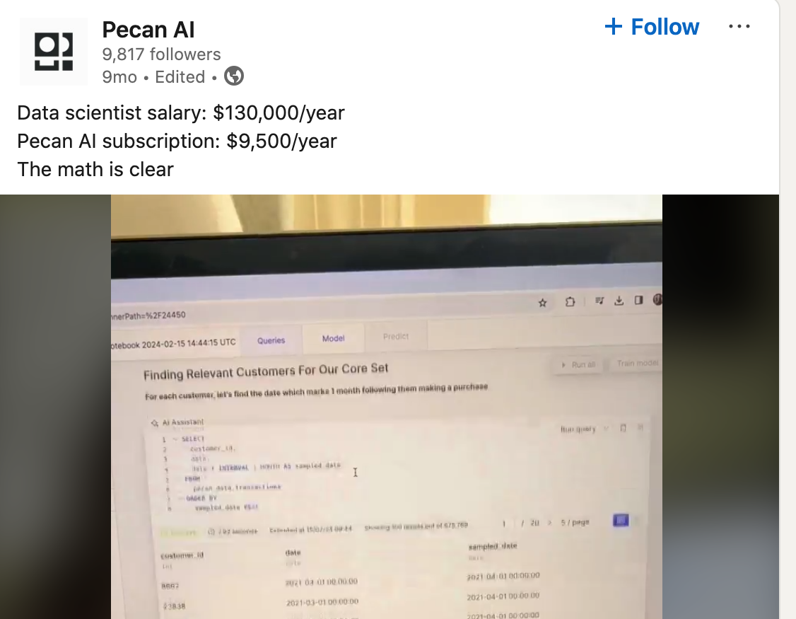

Anyone working in data who wants to start using LLMs must navigate a sea of noise. LLMs make it easy to build quick approachable demos for marketing or social media that seem to suggest some level of AGI. This is effective at striking FOMO into potential customers, but it raises the perceived barrier of entry for engineers. Engineers who could be utilizing this tooling to accelerate this work avoid diving into LLMs, viewing it as digital wizardry when it's largely an API call and a black box function with prompting as an input.
This ad from Pecan AI is a great example: The pitch is clear, we can reduce an entire data scientist down to a chatbot pointed at your data and save you an immense amount of money. For companies, they see a demo of a chatbot turning a request for a daily average into results in their environment and assume this is AGI in action that can replace their analytics teams. For developers who know the full extent of what a data scientist actually does, assume it can do the more complex work not shown in a demo and that building this tooling is far above their skill and are scared off.
For the record, I've looked into Pecan Ais product and it's actually a great offering, but it's oversold. It is simply translating text requests for data insights and translating them into SQL queries that are then executed and shown to a user. It's a common issue that data scientists can get bogged down fulfilling simple requests for data insights from users not fluent in SQL which takes away from their ability to build more complex models. I actually built a stripped down version of this offering for a healthcare client in an afternoon that needed a way for executives to query attrition data without submitting a ticket and waiting for an answer from their analytics team. The takeaway here is that
- • This is not a replacement for a data scientist and the marketing is playing into fog around AI to achieve that perception
- • The tech behind this tooling is an amazing complement to an engineer and actually requires a fairly low level of technical expertise to achieve
Just to highlight my earlier statement on FOMO, most client engagements aren't put in front of me by a client with them saying, "We know AI can accelerate this work in this particular way; come in and build it." Instead, they are more along the lines of, "We’ve heard AI can accelerate work; come in and see what you can do in a pilot and then lets see where we go from here". Companies, in part due to the way AI is being marketed, are still in the phase of figuring out where AI is going to fit into their workflows. AI is not AGI and for now it's not even close, what engineers need to understand is that getting started with AI takes an afternoon and is immensely helpful for automating away repetitive tasks that take away from more complicated work like in the above example; or accelerating repetitive development work, to which I'll give an example at the end of this article.
Understanding LLMs and Their Limitations
For an excellent primer on how LLMs like ChatGPT are trained, I recommend this Medium post. What you should take away is that the sheer amount of data and "noise" in these models enables them to respond in a seemingly intelligent manner, predicting responses word by word. This noise also leads to hallucinations and necessitates specific, directive prompting. If you want an LLM to generate code beyond bootstrap examples, you must specify what you want, the language, and often provide an example that does half the work. Even then, LLMs often struggle to move away from an initial, incorrect response or provide nuanced permutations of it. LLMs shine in repetitive tasks, where you can provide an example of how to get from A to B, then feed them additional As to produce Bs. building AI agents as envisioned by tech companies selling this technology would require feeding models every possible A-to-B scenario in a structured format. in it's current state, most of these models struggle to produce novel and human responses to an A to C scenario that it may not have encountered and it will be forced to hallucinate.
These limitations mean LLMs have valuable, but not revolutionary, use cases. They enhance engineering efficiency without replacing engineers. Once you begin to understand this, it becomes increasingly frustrating to hear people like Jensen Huang tell young adults not to learn how to code. Several students in programs have approached me and asked if they should be worried about their skillset being useless after they graduate and I explain that:
- • AI more than likely isn’t going to take their jobs in a scope of time they should be worried about (Offshoring is actually a far greater concern I would be much more worried about)
- • AI is a tool. Like Stack Overflow or Google, it’s a resource that enhances productivity. Refusing to learn how to integrate AI into workflows would be akin to ignoring Google and writing code solely from books.
Practical Application of LLMs
Once you overcome the marketing hype, LLMs prove to be an amazing tool for accelerating workflows at minimal cost, thanks to OpenAI operating at a loss to provide widespread access. Repetitive tasks that once required complex case statements can now be handled with fewer lines of code using an API key and basic Python skills.
It's helpful to provide a concrete example of how I've actively used AI to accelerate my work as an engineer. We had a client that was looking to move off of an on-premise SQL Server operating on a medallion architecture, using sql server stored procedures to facilitate transformations and movement of the data between layers. Our proposed movement was ADF bringing in source data to Snowflake alongside DBT performing all ETL from a raw layer to a report layer. We had about 500 models to rebuild in DBT from SQL Server stored procedures, two engineers and four months of time. Traditionally, this work would require:
- • Reading and interpreting SQL Server code
- • Mapping SQL Server data types to SF data types
- • Rewriting logic into DBT
- • QAing migrated data against the source
For two engineers, accomplishing this in four months would involve days of repetitive code writing, testing and bug squashing and to complete 500 tables in four months would be a tight fit even with every hour being productive in a day. I noticed however that about 50% of the models we needed to rebuild were relatively simple truncate and reloads or incremental models where the format was mostly the same. Not enough to templatize it in a more traditional coding approach but simple enough that an LLM could understand the movement between the two. Additionally, I realized mapping data types would be much quicker with an LLM since the models know the translation between sql server and Snowflake and it can understand the nuances of significant digits which is crucial for a migration where the data must match completely.
To test this, I spent an hour writing a model that was given an example of how you'd take a sql file from sql server and convert it to DBT and I then fed it one of the SQL Server Bulk load models and it did a perfect job of converting the model, carrying over all columns and even translating the data types along with their inputs perfectly. Over the next few hours I wrote a python script to call to SQL Server, grab a model and write the conversion to DBT and then scaled it to increment across all of the models I desired.
For QA, I wrote a more traditional script that pulled data from source and target that should be identical and flagged any models that were wrong. To my amazement , there was near 100% accuracy on the LLM converter with only a few models I had to correct due to minor hallucination. In essence, I was able to knock out 50% of our most repetitive work in 4 hours, saving our engineers sanity (and some carpal tunnel), providing more leeway to correct errors or recover from long days. I want to emphasize that this solution would have never worked for the other 250 models which were highly complex ETL operations.
LLMs are not a "software engineer in a box" like many would like you to believe, it's an extremely useful tool that you can use to be more efficient, just like Google, spellcheck, excel autofill etc. Businesses are making their lives harder trying to use AI for complex tasks and are better off looking for niche areas where LLMs can make a big difference. On this same note, engineers will find far more practical value in integrating AI into areas of work where lots of simple repetition is involved rather than attempting to build a chatbot that can only do a complex task 50% of the time and the other 50% of the time requires human intervention, defeating the purpose of AI in the first place. I would greatly encourage anyone looking to make themselves more valuable in any data or software profession start digging into AI, but use this philosophy of using AI to reduce repetitive toil as a guidepost.
As a meta experiment, I actually fed the outline for this article to ChatGPT and asked it to convert it to an article, converting the outline notes into full sentences and asked it to retain my voice. The output cut out crucial details that fed into my thesis and transformed my sentences into generic statements that entirely neutered any voice. You can find a similar phenomenon if you browse any top search results in Google and can see where authors had an LLM rewrite their article and produce content lacking of any voice.